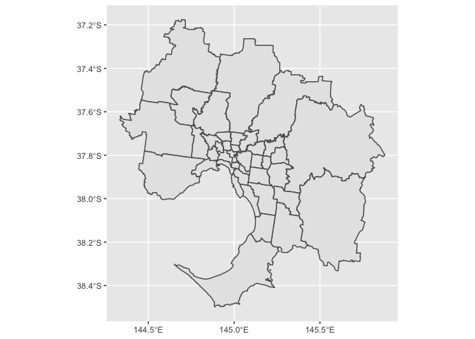
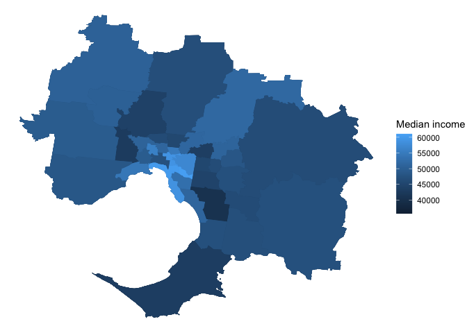

The absmapsdata package exists to make it easier to produce maps from ABS data in R. The package contains compressed, tidied, and lazily-loadable sf objects that hold geometric information about ABS data structures.
It also contains a vast number of 2016 population-weighted ABS correspondences (the most recent) that you can access with the get_correspondence_absmaps function. The correspondences available can be found at the data.gov.au website.
Note: the absmapsdata package is huge. To download and read absmapsdata files without installing the whole absmapsdata package, please see strayr::read_absmaps. E.g.: strayr::read_absmaps("sa42021")
Installation
You can install absmapsdata from github with:
# install.packages("remotes")
remotes::install_github("wfmackey/absmapsdata")absmapsdata contains a lot of data, so installing using remotes::install_github may fail if the download times out. If this happens, set the timeout option to a large value and try again, i.e. run:
options(timeout = 1000)
remotes::install_github("wfmackey/absmapsdata")The sf package is required to handle the sf objects:
Maps loaded with this package
Available maps are listed below. These will be added to over time. If you would like to request a map to be added, let me know via an issue on this Github repo.
ASGS Main Structures
- Statistical Area 1 2011:
sa12011; 2016:sa12016; and 2021:sa12021. - Statistical Area 2 2011:
sa22011; 2016:sa22016; and 2021:sa22021. - Statistical Area 3 2011:
sa32011; 2016:sa32016; and 2021:sa32021. - Statistical Area 4 2011:
sa42011; 2016:sa42016; and 2021:sa42021. - Greater Capital Cities 2011:
gcc2011; 2016:gcc2016; and 2021:gcc2021. - Remoteness Areas 2011:
ra2011; and 2016:ra2016 - State 2011:
state2011; 2016:state2016; andstate2021.
ASGS Non-ABS Structures
- Commonwealth Electoral Divisions 2018:
ced2018; and 2021:ced2021 - State Electoral Divisions 2018:
sed2018; and 2021:sed2021 - Local Government Areas 2016:
lga2016; 2018:lga2018; and 2021:lga2021 - Regions for the Internet Vacancy Index 2008:
regional_ivi2008 - Postcodes 2016:
postcode2016; and 2021:postcode2021 - Suburbs (SSC) 2016:
suburb2016; and (SAL) 2021:suburb2021 - Census of Population and Housing Destination Zones 2011:
dz2011; 2016:dz2016; and 2021:dz2021.
Non-ABS Australian Government Structures
- Employment Regions 2015-2020:
employment_regions2015
Just show me how to make a map with this package
Using the package’s pre-loaded data
The absmapsdata package comes with pre-downloaded and pre-processed data. To load a particular geospatial object: load the package, then call the object (see list above for object names).
library(tidyverse)
#> ── Attaching packages ─────────────────────────────────────── tidyverse 1.3.1 ──
#> ✓ ggplot2 3.3.5 ✓ purrr 0.3.4
#> ✓ tibble 3.1.5 ✓ dplyr 1.0.7
#> ✓ tidyr 1.1.4 ✓ stringr 1.4.0
#> ✓ readr 2.0.2 ✓ forcats 0.5.1
#> ── Conflicts ────────────────────────────────────────── tidyverse_conflicts() ──
#> x dplyr::filter() masks stats::filter()
#> x dplyr::lag() masks stats::lag()
library(sf)
#> Linking to GEOS 3.8.1, GDAL 3.2.1, PROJ 7.2.1
library(absmapsdata)
mapdata1 <- sa32021
glimpse(mapdata1)
#> Rows: 359
#> Columns: 12
#> $ sa3_code_2021 <chr> "10102", "10103", "10104", "10105", "10106", "10201", …
#> $ sa3_name_2021 <chr> "Queanbeyan", "Snowy Mountains", "South Coast", "Goulb…
#> $ sa4_code_2021 <chr> "101", "101", "101", "101", "101", "102", "102", "103"…
#> $ sa4_name_2021 <chr> "Capital Region", "Capital Region", "Capital Region", …
#> $ gcc_code_2021 <chr> "1RNSW", "1RNSW", "1RNSW", "1RNSW", "1RNSW", "1GSYD", …
#> $ gcc_name_2021 <chr> "Rest of NSW", "Rest of NSW", "Rest of NSW", "Rest of …
#> $ state_code_2021 <chr> "1", "1", "1", "1", "1", "1", "1", "1", "1", "1", "1",…
#> $ state_name_2021 <chr> "New South Wales", "New South Wales", "New South Wales…
#> $ areasqkm_2021 <dbl> 6511.3971, 14284.5857, 9864.4876, 9099.9087, 12135.865…
#> $ cent_lat <dbl> -35.44896, -36.43821, -36.49582, -34.51746, -34.57987,…
#> $ cent_long <dbl> 149.6018, 148.9415, 149.8079, 149.6046, 148.6786, 151.…
#> $ geometry <MULTIPOLYGON [°]> MULTIPOLYGON (((149.979 -35..., MULTIPOLY…Or
mapdata2 <- sa22016
glimpse(mapdata2)
#> Rows: 2,310
#> Columns: 15
#> $ sa2_code_2016 <chr> "101021007", "101021008", "101021009", "101021010", "1…
#> $ sa2_5dig_2016 <chr> "11007", "11008", "11009", "11010", "11011", "11012", …
#> $ sa2_name_2016 <chr> "Braidwood", "Karabar", "Queanbeyan", "Queanbeyan - Ea…
#> $ sa3_code_2016 <chr> "10102", "10102", "10102", "10102", "10102", "10102", …
#> $ sa3_name_2016 <chr> "Queanbeyan", "Queanbeyan", "Queanbeyan", "Queanbeyan"…
#> $ sa4_code_2016 <chr> "101", "101", "101", "101", "101", "101", "101", "101"…
#> $ sa4_name_2016 <chr> "Capital Region", "Capital Region", "Capital Region", …
#> $ gcc_code_2016 <chr> "1RNSW", "1RNSW", "1RNSW", "1RNSW", "1RNSW", "1RNSW", …
#> $ gcc_name_2016 <chr> "Rest of NSW", "Rest of NSW", "Rest of NSW", "Rest of …
#> $ state_code_2016 <chr> "1", "1", "1", "1", "1", "1", "1", "1", "1", "1", "1",…
#> $ state_name_2016 <chr> "New South Wales", "New South Wales", "New South Wales…
#> $ areasqkm_2016 <dbl> 3418.3525, 6.9825, 4.7634, 13.0034, 3054.4099, 13.6789…
#> $ cent_long <dbl> 149.7932, 149.2328, 149.2255, 149.2524, 149.3911, 149.…
#> $ cent_lat <dbl> -35.45508, -35.37590, -35.35103, -35.35520, -35.44408,…
#> $ geometry <MULTIPOLYGON [°]> MULTIPOLYGON (((149.7606 -3..., MULTIPOLY…The resulting sf object contains one observation per area (in the following examples, one observation per sa3). It stores the geometry information in the geometry variable, which is a nested list describing the area’s polygon. The object can be joined to a standard data.frame or tibble and can be used with dplyr functions.
Creating maps with your sf object
We do all this so we can create gorgeous maps. And with the sf object in hand, plotting a map via ggplot and geom_sf is simple.
map <-
sa32016 %>%
filter(gcc_name_2016 == "Greater Melbourne") %>% # let's just look Melbourne
ggplot() +
geom_sf(aes(geometry = geometry)) # use the geometry variable
map
The data also include centroids of each area, and we can add these points to the map with the cent_lat and cent_long variables using geom_point.
map <- sa32016 %>%
filter(gcc_name_2016 == "Greater Melbourne") %>% # let's just look Melbourne
ggplot() +
geom_sf(aes(geometry = geometry)) + # use the geometry variable
geom_point(aes(cent_long, cent_lat)) # use the centroid long (x) and lats (y)
map
Cool. But this all looks a bit ugly. We can pretty it up using ggplot tweaks. See the comments on each line for its objective. Also note that we’re filling the areas by their areasqkm size, another variable included in the sf object (we’ll replace this with more interesting data in the next section).
map <- sa32016 %>%
filter(gcc_name_2016 == "Greater Melbourne") %>% # let's just look Melbourne
ggplot() +
geom_sf(aes(geometry = geometry, # use the geometry variable
fill = areasqkm_2016), # fill by area size
lwd = 0, # remove borders
show.legend = FALSE) + # remove legend
geom_point(aes(cent_long,
cent_lat), # use the centroid long (x) and lats (y)
colour = "white") + # make the points white
theme_void() + # clears other plot elements
coord_sf()
map
Joining with other datasets
At some point, we’ll want to join our spatial data with data-of-interest. The variables in our mapping data—stating the numeric code and name of each area and parent area—will make this relatively easy.
For example: suppose we had a simple dataset of median income by SA3 over time.
# Read data in some data
income <- read_csv("https://raw.githubusercontent.com/wfmackey/absmapsdata/master/img/data/median_income_sa3.csv")
#> Rows: 2148 Columns: 3
#> ── Column specification ────────────────────────────────────────────────────────
#> Delimiter: ","
#> chr (2): sa3_name_2016, year
#> dbl (1): median_income
#>
#> ℹ Use `spec()` to retrieve the full column specification for this data.
#> ℹ Specify the column types or set `show_col_types = FALSE` to quiet this message.
head(income)
#> # A tibble: 6 × 3
#> sa3_name_2016 year median_income
#> <chr> <chr> <dbl>
#> 1 Queanbeyan 2010-11 51858
#> 2 Snowy Mountains 2010-11 35884
#> 3 South Coast 2010-11 30908
#> 4 Goulburn - Mulwaree 2010-11 38269
#> 5 Young - Yass 2010-11 39489
#> 6 Gosford 2010-11 38189This income data contains a variable sa3_name_2016, and we can use dplyr::left_join() to combine with our mapping data.
combined_data <- left_join(income,
sa32016,
by = "sa3_name_2016")Now that we have a tidy dataset with 1) the income data we want to plot, and 2) the geometry of the areas, we can plot income by area:
map <- combined_data %>%
filter(gcc_name_2016 == "Greater Melbourne") %>% # let's just look Melbourne
ggplot() +
geom_sf(aes(geometry = geometry, # use the geometry variable
fill = median_income), # fill by unemployment rate
lwd = 0) + # remove borders
theme_void() + # clears other plot elements
labs(fill = "Median income")
map
Get correspondence files
You can use the get_correspondence_absmaps function to get population-weighted correspondence tables provided by the ABS. Note that while there are lots of correspondence tables, not every combination is available.
For example:
get_correspondence_absmaps("cd", 2006,
"sa1", 2016)
#> # A tibble: 92,336 × 5
#> CD_CODE_2006 SA1_MAINCODE_2016 SA1_7DIGITCODE_2016 ratio PERCENTAGE
#> <chr> <chr> <chr> <dbl> <chr>
#> 1 1010101 10902117908 1117908 0.477 47.705709900000002
#> 2 1010101 10902117909 1117909 0.486 48.579130499999998
#> 3 1010101 10902117910 1117910 0.0372 3.7151597000000001
#> 4 1010102 10902117907 1117907 0.210 21.012930999999998
#> 5 1010102 10902117908 1117908 0.281 28.062155199999999
#> 6 1010102 10902117910 1117910 0.509 50.924913799999999
#> 7 1010103 10902117907 1117907 1 100
#> 8 1010104 10902117901 1117901 0.510 51.007496400000001
#> 9 1010104 10902117907 1117907 0.490 48.992503599999999
#> 10 1010105 10902117907 1117907 1 100
#> # … with 92,326 more rowsWhy does this package exist?
The motivation for this package is that maps are cool and fun and are, sometimes, the best way to communicate data. And making maps is R with ggplot is relatively easy when you have the right object.
Getting the right object is not technically difficult, but requires research into the best-thing-to-do at each of the following steps:
- Find the ASGS ABS spatial-data page and determine the right file to download.
- Read the shapefile into
Rusing one-of-many import tools. - Convert the object into something usable.
- Clean up any inconsistencies and apply consistent variable naming/values across areas and years.
- Find an appropriate compression function and level to optimise output.
For me at least, finding the correct information and developing the best set of steps was a little bit interesting but mostly tedious and annoying. The absmapsdata package holds this data for you, so you can spend more time making maps, and less time on Stack Overflow, the ABS website, and lovely-people’s wonderful blogs.
Comments/complaints/requests
The best avenue is via a Github issue at wfmackey/absmapsdata/issues. This is also the best place to request data that isn’t yet available in the package.